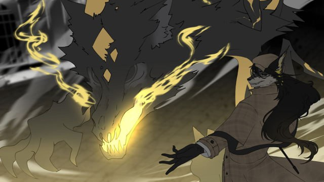

Немного про нас
Этот сайт — личный альманах по пвп режиму в морименс.
Заметки, гайды, сборки и персонажи без лишнего шума.
Здесь нет «лучших билдов» и универсальных советов.
Есть наблюдения, рабочие решения и вещи, которые показали себя на практике.
Формат простой: текст, структура, немного визуала.
Как файл, который удобно открыть и перечитать.
